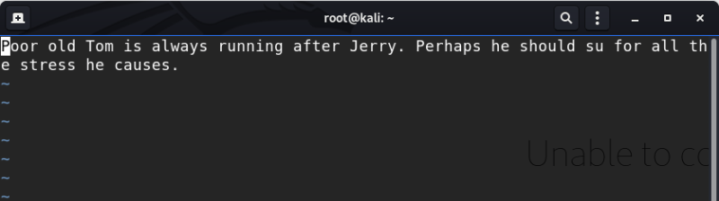

SSH (3rd flag)
We've found a SSH port open on 7744 in “
Finding Services and Ports
”.
a) Let's try to enter with the credentials we already have form our Kali Linux Machine.
• Username: jerry.
• Password: adipiscing.
• username: tom.
• password: parturient.
$
ssh
-p 7744 tom@192.168.12.40
$
ls
Output:
flag3.txt usr
If I try to use “cat” command to see the contents of “flag3.txt” doesn't work.
I can NOT run some Linux commands. This happened because the shell is a restricted shell.
b) Checked the PATH variable and you'll find out that you can use “vi”.
$
echo
$PATH
Output:
/home/tom/usr/bin
c) Let see what there is in that directory.
$
ls
/
home
/
tom
/
usr
/
bin
/
Output:
less ls scp vi
d) Use “vi” to see the “flag3.txt” file.
$ vi flag3.txt
Output:

You got your thrid flag.
Index